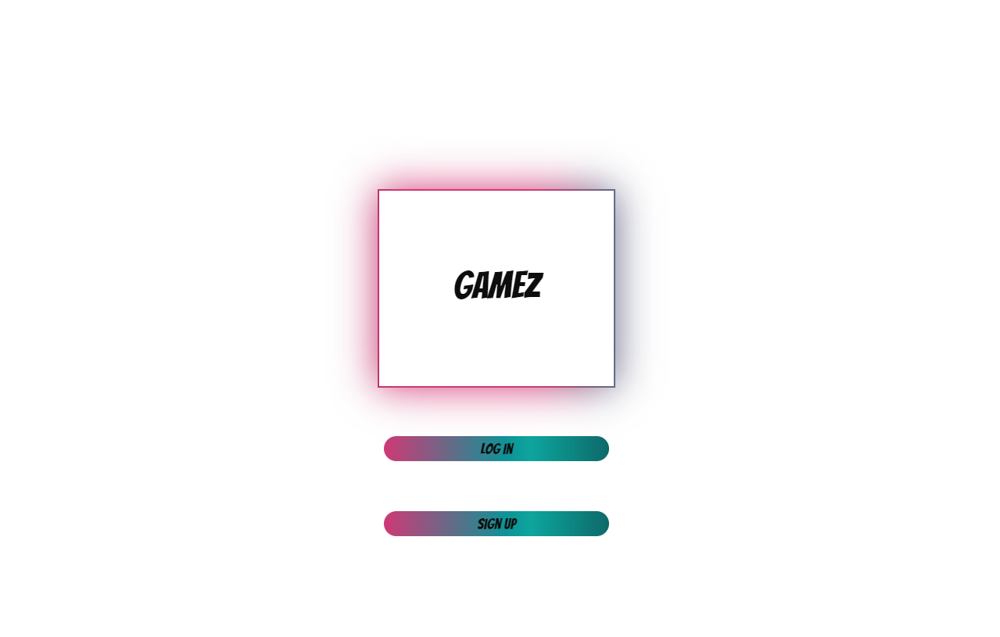
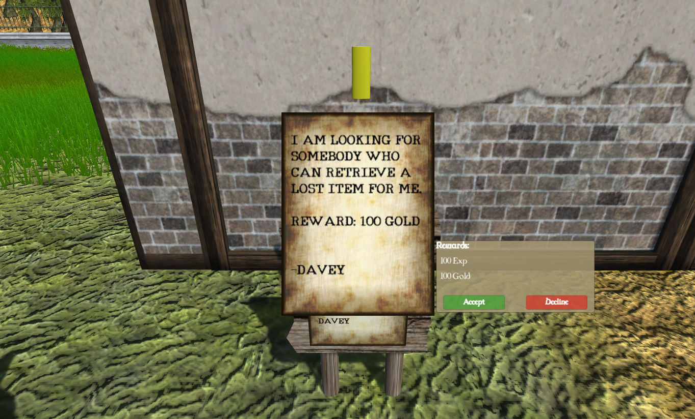
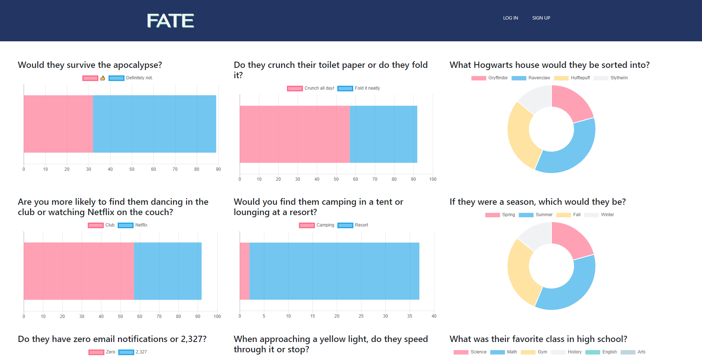

A Little About Me!
Hello, My Name is Ben Rumsey. A recent graduate of Galvanize (Denver’s home to world-class tech education programs in software engineering and data science) I am passionate about building communities and user experiences
that allow me to combine two of my passions: technology and psychology. User X and programming is all about delivering solutions for real people. Most recently I joined the team at ItsLiveWired to improve
their UX and UI for their site. Currently I’m looking to build on that success and grow in the developer and UX space.
A native of Denver, I’m proud to be in such a robust tech community - but of course still find time
for everything Colorado has to offer - a life-long athlete and tech junkie - I’m partial to finding another position here in Colorado but would be very open to any back end or front end development opportunities in Oregon and Remote as well.
IGDB
Internet Games Data Base. A re-create of IMDB but for games.
Tech Used
- React
- Node.js
- PSQL
- Knex
- Express
Where Are They
Where Are They? is an open world rpg. The main character Zelos, wakes up in a cabin and realizes that his family is gone and doesn't know where they are. Zelos must roam the lands to find his family and other clues to find out what is really going on.
Tech Used
- C#
- Unity
Fate
Our site provides a platform that allows users to rate each other anonymously. This will give real-time feedback for users to better themselves through our app.
(GROUP PROJECT)
Tech Used
- Angular 7
- SCSS
- Chart.js
- PSQL
- Knex
- Express